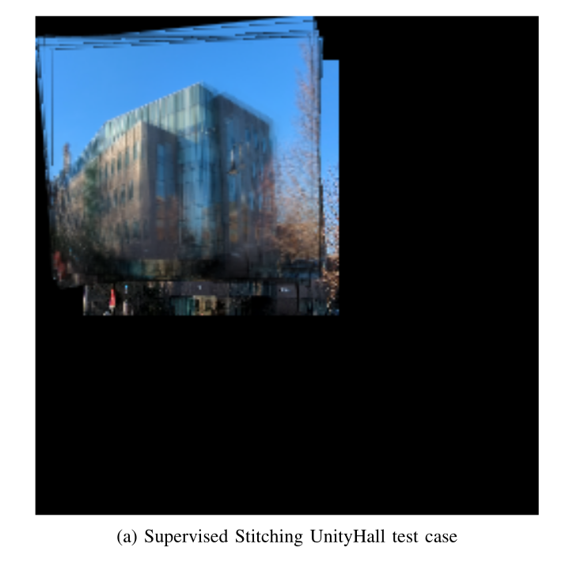
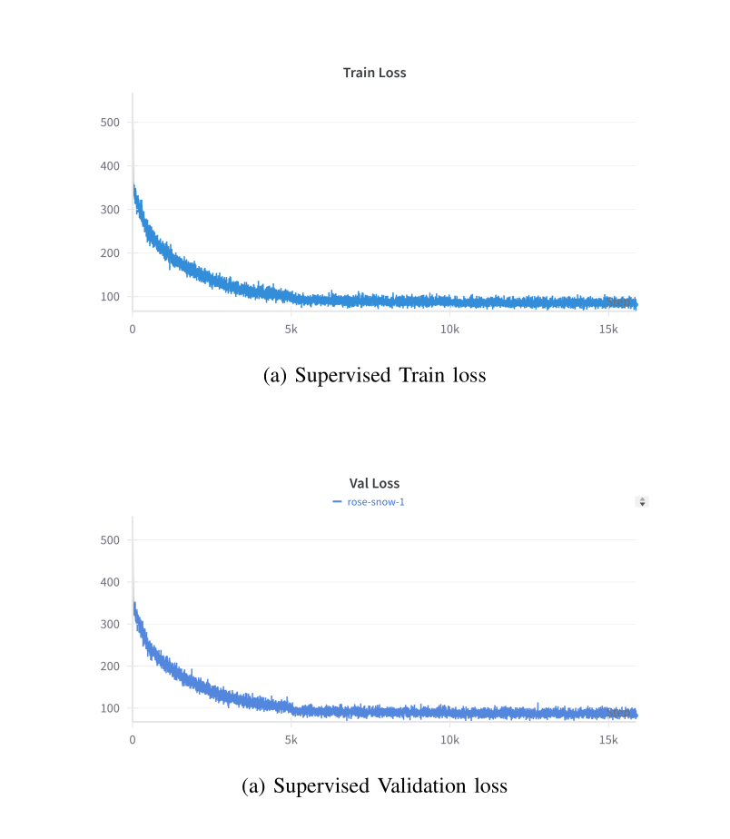
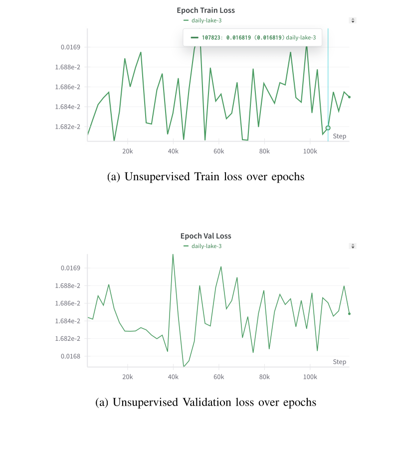
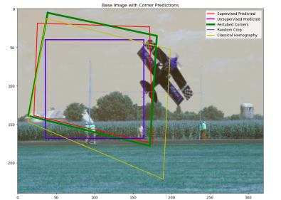
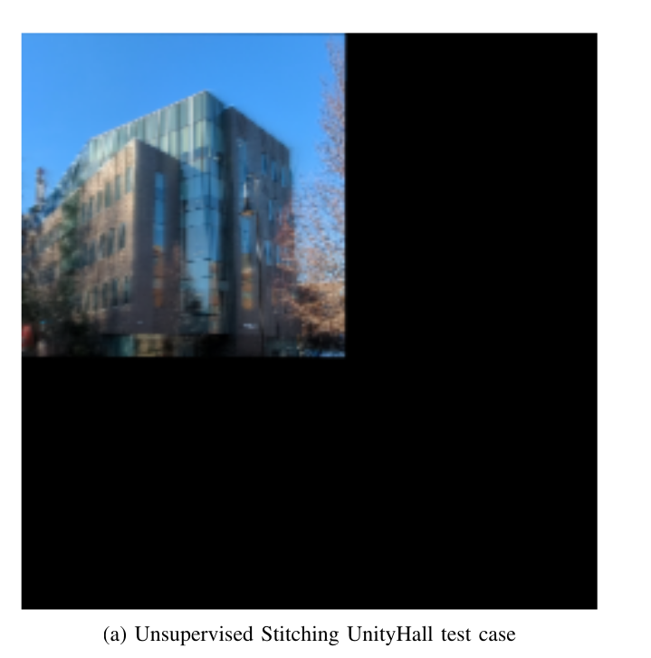
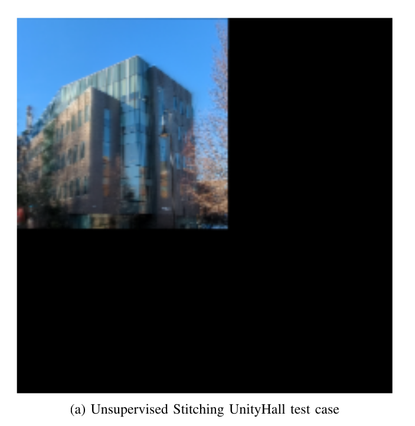

Generate patch pairs
Images are resized, converted to grayscale, and cropped into 128×128 patches. Random corner perturbations create paired patches with known ground-truth homography offsets.
RBE/CS 549 · Geometric Computer Vision
Phase 2 of MyAutoPano replaces hand-crafted feature matching with a CNN that predicts homography corner offsets from image patch pairs. The predicted transformation is then used to warp and stitch images into a panorama.

Problem statement
The goal of Phase 2 is to learn the homography between two related image patches. Instead of detecting corners, building descriptors, matching features, and running RANSAC, a neural network receives two stacked grayscale patches, PA and PB, and predicts the 8 values of H4pt: the x-y displacement of the four patch corners.
This output is useful because a four-corner displacement can be converted into a 3×3 homography matrix. That matrix can warp one image into the coordinate frame of the other image, enabling panorama stitching.
Pipeline
Images are resized, converted to grayscale, and cropped into 128×128 patches. Random corner perturbations create paired patches with known ground-truth homography offsets.
A CNN takes the two-channel stacked patch input and regresses 8 corner-offset values representing the motion of the four crop corners.
For the unsupervised setup, Tensor DLT converts predicted corner offsets into a 3×3 homography matrix.
The estimated homography warps the image into a common frame. The warped result is placed on a canvas to produce the final panorama.
The supervised model directly compares the predicted H4pt offsets with labeled H4pt ground truth. The training code builds mini-batches by loading P_A, P_B, and the corresponding JSON label, stacks the two patches, and optimizes the CNN using the homography regression loss.
The unsupervised model uses the same network output, but the loss is image-based. Predicted H4pt is converted to a homography using Tensor DLT, then warp_perspective generates a reconstructed patch. Photometric L1 loss compares the warped patch against the target patch.
Architecture
The network contains eight convolutional layers with ReLU activations and BatchNorm. MaxPooling reduces spatial size after groups of convolutional layers. The flattened feature map passes through a 1024-unit fully connected layer and a final 8-value output layer.
Results





Implementation
Batch generation, supervised training, unsupervised Tensor DLT, photometric loss, checkpoints, and TensorBoard logs.
HomographyNet CNN definitions, supervised model, updated supervised model, and regression loss function.
Loads trained checkpoints, evaluates patch pairs on validation data, predicts H4pt, and reports average loss.
The Phase 2 system demonstrates how homography estimation can be learned from data. The supervised model successfully reduces loss and captures meaningful rotation, but the final stitching results show that translation remains difficult. The unsupervised model, trained using photometric reconstruction loss, did not learn a strong enough transformation for reliable stitching. Future improvements could include stronger data augmentation, multi-scale training, better photometric masking, and explicit translation-aware loss terms.